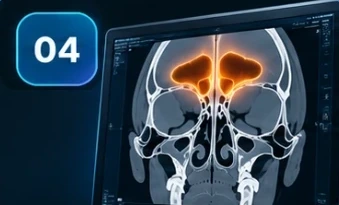
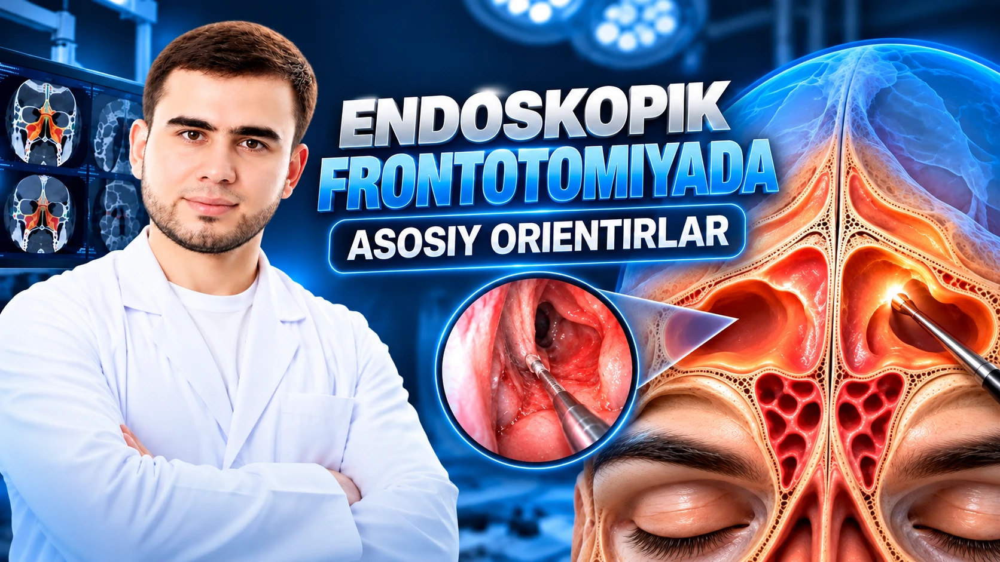

⚠️ LOR shifokorlari diqqatiga! ⚠️
Endoskopik Peshona Operatsiyalarini xavfsiz va asoratsiz o'tkazishni bu 5 qadam orqali o'rganing!


bo'yicha eng ishonchli kirishni o'zlashtirasiz

xatosiz bajarib, kutilgan ijobiy natijaga erishasiz va bu malakangizni oshiradi

Men ilm olish pul sababli to‘xtab qolishini xohlamayman.
Bu bilimlarni o‘zlashtirish uchun 5 dan ortiq davlatda malaka oshirdim. Yillar davomida vaqtimni va bir necha ming dollar pulimni sarflashga majbur bo‘ldim.
Qolaversa, bu 2 ta darsni hech kimga alohida sotmaganman. Ular faqatgina 5.000.000 so‘mlik dasturim tarkibida berilgan.
Lekin, siz hoziroq shu 2 ta darsni qo‘lga kiritishingiz mumkin

Kinoga 1 ta VIP chipta
KFC dan 2 ta sanders box
Kursimdagi 2 ta foydali darslik
Berayotgan darslarim sizga haqiqatan ham foyda berishiga va amaliyotda natija berishiga ishonaman.
Chunki maqsadim shunchaki dars o‘tish emas, balki sizga real ish jarayonida kerak bo‘ladigan bilimlarni berish.
Agar hali ham ikkilanayotgan bo‘lsangiz, quyida katta dasturimda o‘qigan hamkasblarimning fikrlarini qoldiraman.
O‘zingiz ko’rib chiqib, qaror qiling 👇
1) Quyidagi karta raqamiga ushbu to’lovni amalga oshirasiz: 97,000 so'm
2) To’lovingiz chekini rasmga olasiz
3) To'lov chekini pastdagi tugmani bosib, bizga yuborasiz.
Telegramga o'tish